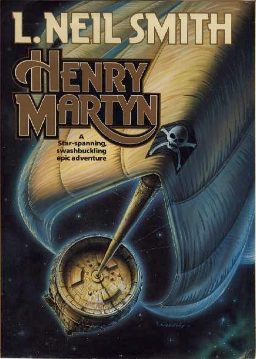

Henry Martyn
by L. Neil Smith
A thousand years
from now, in the depths of interstellar space, there will be sailing
ships -- and pirates! Vast empires clash as young Arran Islay fights
for freedom -- and to regain a legacy brutally stripped from his family
by the "Black Usurper".
Watch for
sequel, Bretta Martyn, coming in August 1997!
New York: A Tor Book, A Tom Doherty Associates Book, 1989
437 pages, hardcover, dustjacket
Library of Congress Catalog Card Number: [not given]
ISBN 0-312-93186-7
First Edition: August 1989
Jacket art by Ron Walotsky
Jacket design by Carol Russo